8. 第7章 発展と応用¶
8.1. 例外処理¶
8.2. 例外¶
例外とは
プログラム実行時に発生したトラブルやそれを表すもの。
print('a / b の計算をします')
a = 'abc'
b = 'def'
c = float(a) / float(b)
print('答えは', c)
入力された値が、数字ではない場合、bの値がゼロの場合、エラーが発生する
a / b の計算をします
---------------------------------------------------------------------------
ValueError Traceback (most recent call last)
/tmp/ipython-input-1-3437524588.py in <cell line: 0>()
2 a = 'abc'
3 b = 'def'
----> 4 c = float(a) / float(b)
5 print('答えは', c)
ValueError: could not convert string to float: 'abc'
8.3. 例外処理¶
構文： try～except 文
try:
本来実行したい処理(例外が発生する可能性がある)
expect:
例外が発生したときの処理
print('a / b の計算をします')
try:
a = 'abc'
b = 'def'
c = float(a) / float(b)
print('答えは', c)
expect:
print('入力が適切ではありません')
print('処理を終わります')
8.4. 例外の種類による処理の切り替え¶
構文： try～except 文
try:
本来実行したい処理(例外が発生する可能性がある)
expect 例外の種類1:
例外（種類1）が発生したときの処理
expect 例外の種類2:
例外（種類2）が発生したときの処理
print('a / b の計算をします')
try:
a = 'abc'
b = 'def'
c = float(a) / float(b)
print('答えは', c)
expect ValueError:
print('処理を入力が数字でありません')
expect ZeroDivisionError:
print('ゼロで割ることはできません')
print('処理を終わります')
8.5. 例外が発生しなかった場合の処理¶
構文： try～except～else～finally 文
try:
本来実行したい処理(例外が発生する可能性がある)
expect:
例外が発生したときの処理
else:
例外が発生しなかったときの処理
finally:
例外の有無にかかわらず実行される処理
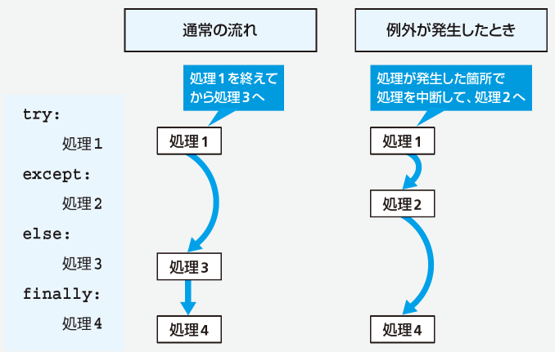
8.6. テキストファイルの読み書き¶
8.7. テキストファイル¶
テキストファイルとは
人が読んで理解することができる文字の集まり
（テキストファイルではないものをバイナリファイルという）
各種データを保存するためのファイルで広く使われている
テキストファイルの例
visitor_record.txt
2021-07-01,東京都,1,0
2021-07-01,千葉県,2,1
2021-07-01,千葉県,2,2
2021-07-01,神奈川県,4,2
2021-07-02,福島県,2,0
2021-07-02,埼玉県,3,2
2021-07-02,埼玉県,4,2
（略）
データをカンマ区切りで記述する形式をCSV形式とよぶ
1行分のデータを1つのレコードとよぶ
8.8. テキストファイルの読み込み¶
open関数 ：ファイルの読み書きをする
open(ファイルパス, mode='r', encoding=None)
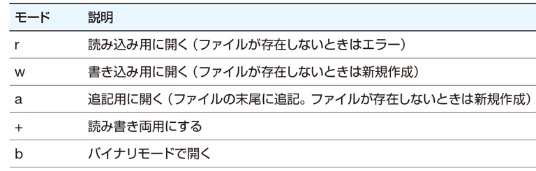
8.9. ファイルを1行ずつ読む¶
f = open(ファイルパス, 'r', encoding='UTF-8')
lines = f.readlines()
for l in lines:
print(l)
f.close()
8.10. with文を使ったファイルの読み込み¶
構文
with open(引数列) as 変数:
with文を使ってファイルを1行ずつ読み込む例
with open(ファイルパス, 'r', encoding='UTF-8') as f:
for l in f:
print(l)
一度に全部をメモリに取り込まないので、サイズが大きなファイルを扱える
8.11. テキストファイルの書き出し¶
f = open(ファイルパス, 'w', encoding='UTF-8')
for i in range(0,100):
f.write(str(i) + '¥n') <--- 改行も書き出す必要がある
close(f)
with文を使う場合
with open(ファイルパス, 'w', encoding='UTF-8') as f:
for i in range(0,100):
f.write(str(i) + '¥n')
8.12. テキストファイルの書き出し¶
with文を使う場合
with open(ファイルパス, 'w', encoding='UTF-8') as f:
for i in range(0,100):
f.write(str(i) + '¥n')
8.13. ファイルの読み書き¶
with文を使って、出力先のファイルと読み込むファイルの両方を開く
入力ファイルを1行ずつ読み込み、'東京都'という文字列が含まれる場合は出力ファイルに書き出す
with open(出力ファイルのパス, 'w', encoding='UTF-8') as out_f:
with open(入力ファイルのパス, 'r', encoding='UTF-8') as in_f:
for line in in_f:
if '東京都' in line:
out_f.write(line)
実行結果（出力ファイルの中身）
2021-07-01,東京都,1,0
2021-07-03,東京都,2,1
2021-07-03,東京都,4,2
(略)
8.14. データの集計とグラフ描画¶
8.15. データの読み込み¶
都道府県と来館者数の組を、来館者の多い順にソートして出力する
pref_count_dict = {}
with open('data/visitor_record.txt', 'r', encoding='UTF-8') as f:
for line in f:
date, pref, num_adult, num_children = line.split(',')
num_all = int(num_adult) + int(num_children)
if pref in pref_count_dict:
pref_count_dict[pref] += num_all
else:
pref_count_dict[pref] = num_all
pref_count_sorted = sorted(pref_count_dict.items(), key=lambda x:x[1], reverse=True)
for i in pref_count_sorted:
print(i)
visitor_record.txt
2021-07-01,東京都,1,0
2021-07-01,千葉県,2,1
2021-07-01,千葉県,2,2
2021-07-01,神奈川県,4,2
2021-07-02,福島県,2,0
2021-07-02,埼玉県,3,2
2021-07-02,埼玉県,4,2
※ CSV形式（1行＝1レコード）
出力
('東京都',224)
('千葉県',170)
('神奈川県',148)
('埼玉県',142)
(略)
('長野県',6)
('沖縄県',2)
8.16. matplotlibライブラリを用いたグラフの作成¶
matplotlibライブラリとは
グラフ描画用の機能をまとめたライブラリ
公式サイト https://matplotlib.org/
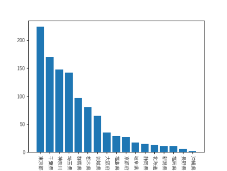
8.17. 外部ライブラリ¶
外部ライブラリとは
Pythonに最初から備わっている「標準ライブラリ」とは別に、外部で開発されたライブラリで、必要に応じてインストールが必要
画像処理、機械学習、グラフ生成、最適化計算など、特定の分野に特化した機能を提供
matplotlib は、外部ライブラリの1つ。グラフ描画用の機能が含まれる
8.18. pip コマンド¶
外部ライブラリのインストール・管理を行うコマンド
コマンドシェルで「pip list 」と入力することでインストール済みのライブラリ一覧を得られる
$ pip list
Package Version
----------------------------- --------------
aiosqlite 0.19.0
alabaster 1.0.0
anyio 4.9.0
argon2-cffi 25.1.0
argon2-cffi-bindings 21.2.0
arrow 1.3.0
asttokens 3.0.0
(略)
「 pip install ライブラリ名 」と入力することでライブラリをインストールできる
$ pip install matplotlib
Google Colabの場合
!pip install matplotlib
8.19. データ読み込み → グラフ出力¶
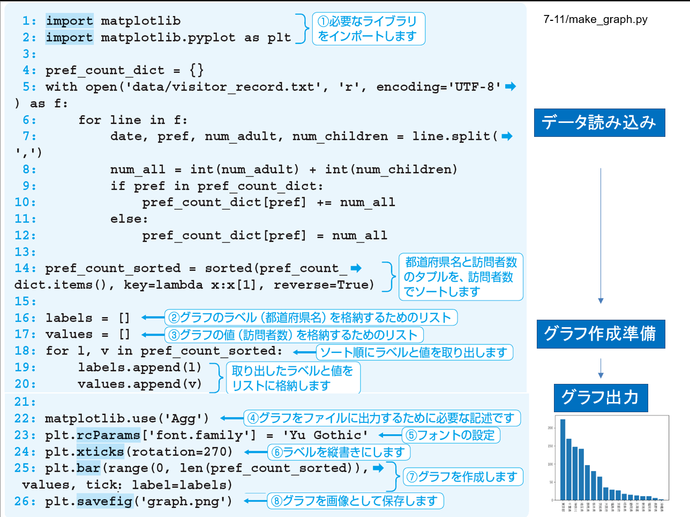
import matplotlib
import matplotlib.pyplot as plt
pref_count_dict = {}
with open('data/visitor_record.txt', 'r', encoding='UTF-8') as f:
for line in f:
date, pref, num_adult, num_children = line.split(',')
num_all = int(num_adult) + int(num_children)
if pref in pref_count_dict:
pref_count_dict[pref] += num_all
else:
pref_count_dict[pref] = num_all
pref_count_sorted = sorted(pref_count_dict.items(), key=lambda x:x[1], reverse=True)
labels = []
values = []
for l, v in pref_count_sorted:
labels.append(l)
values.append(v)
matplotlib.use('Agg')
plt.rcParams['font.family'] = 'Yu Gothic'
plt.xticks(rotation=270)
plt.bar(range(0, len(pref_count_sorted) ), values, tick_label=labels)
plt.savefig('graph.png')
8.20. さまざまなグラフ¶
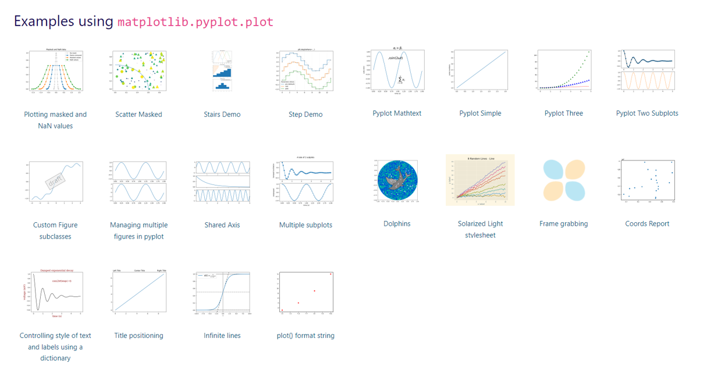
https://matplotlib.org/stable/api/_as_gen/matplotlib.pyplot.plot.html#matplotlib.pyplot.plot
8.21. 画像処理¶
8.22. OpenCVを用いた画像処理¶
OpenCVライブラリとは画像処理用の機能をまとめたライブラリ
$ pip install opencv-python
Google Colabの場合
!pip install opencv-python
OpenCVを用いた画像ファイルの表示
import cv2
img = cv2.imread('data/block.jpg')
cv2.imshow('img', img)
cv2.waitKey(0)
cv2.destroyAllWindows()
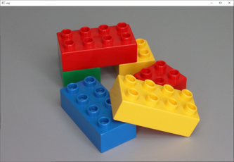
8.23. 画像処理とファイルの書き出し¶
画像サイズの変更
height = img.shape[0]
width = img.shape[1]
resized_img = cv2.resize(img, (int(width/2), height))
cv2.imwrite('resized.jpg', resized_img)
変換前
変換後
8.24. 画像処理とファイルの書き出し¶
色の変更（グレー画像）
gray_img = cv2.cvtColor(img, cv2.COLOR_RGBA2GRAY)
cv2.imwrite('gray.jpg', gray_img)
エッジ検出
canny_img = cv2.Canny(img, 50, 100)
cv2.imwrite('canny.jpg', canny_img)
50: エッジの長さを調整 100: エッジとみなす輝度の閾値
元画像
エッジ検出
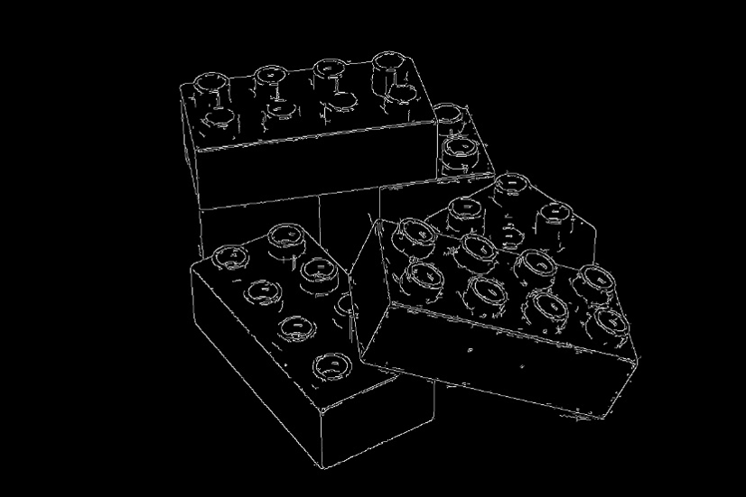
8.25. 円の検出¶
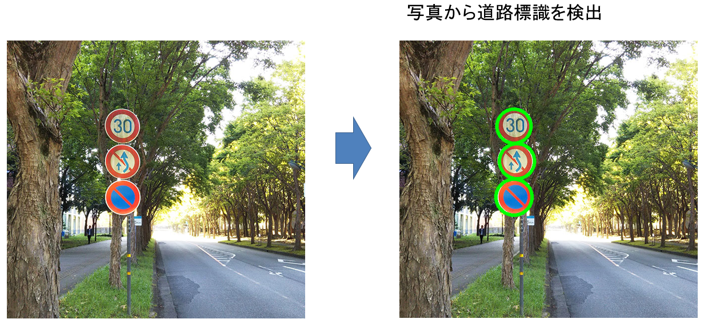
8.26. 円の検出 (ソースコード)¶
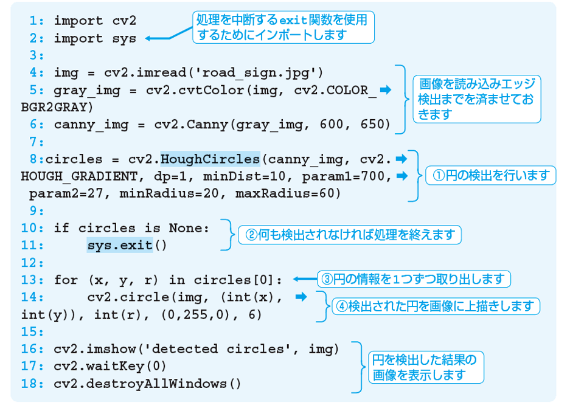
import cv2
import sys
img = cv2.imread('data/road_sign.jpg')
gray_img = cv2.cvtColor(img, cv2.COLOR_BGR2GRAY)
canny_img = cv2.Canny(gray_img, 600, 650)
circles = cv2.HoughCircles(canny_img, cv2.HOUGH_GRADIENT, dp=1, minDist=10, param1=700, param2=27, minRadius=20, maxRadius=60)
if circles is None:
sys.exit()
for (x, y, r) in circles[0]:
cv2.circle(img, (int(x), int(y)), int(r), (0,255,0), 6)
cv2.imshow('detected circles', img)
cv2.waitKey(0)
cv2.destroyAllWindows()
8.27. 円の検出¶
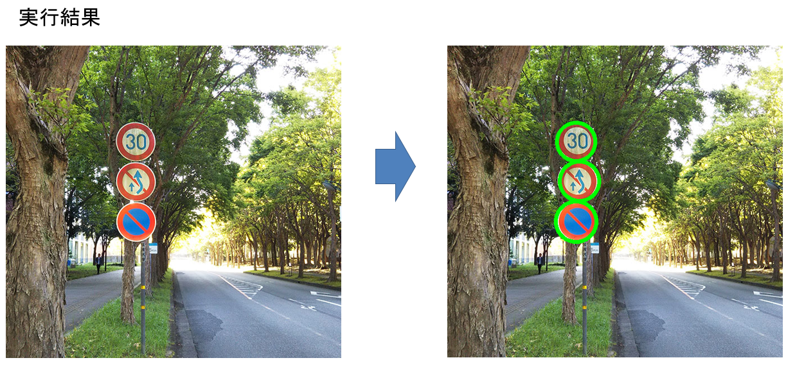
8.28. Webスクレイピング¶
8.29. Webスクレイピング¶
Webスクレイピングとは インターネット上のWebページから、欲しい情報を取り出すこと。
8.30. HTMLファイルの構造¶
文書の構造をタグで定義
<タグ名>文章</タグ名>
<html>
<head>
<title>タイトル</title>
</head>
<body>
<h1>見出し</h1>
<p>段落1</p>
<p>段落2</p>
</body>
</html>
8.31. Webスクレイピングの流れ¶
インターネット上からHTMLファイルを取得する
HTMLファイルに含まれるタグの構造を見て、必要な情報が記述されている場所を特定する
HTMLファイルから必要な情報を取り出す
8.32. ライブラリの準備¶
requestsライブラリ
インターネット上のファイルを取得する
$ pip install requests
Google Colabの場合
!pip install requests
beautifulsoup4ライブラリ
HTMLファイルの内容を解析する
$ pip install beautifulsoup4
Google Colabの場合
!pip install requests
8.33. HTMLファイルの取得¶
requestsモジュールのgetメソッドでHTMLファイルを取得できる
import requests
html = requests.get('https://www.shoeisha.co.jp/book/ranking')
print(html.txt)
ブラウザで「ページのソースを表示」したときと同じ内容が得られる。
<!DOCTYPE HTML>
<html>
<head>
<script>
var dataLayer = dataLayer || [];
dataLayer.push({
'trackPageview':'SECOJP/book/ranking',
'member' : 'nonmember',
});
</script>
(略)
8.34. HTMLファイルの解析¶
import requests
from bs4 import BeautifulSoup
result = requests.get('取得したいURL')
soup = BeautifulSoup(result.text, 'html.parser')
print(soup.title)
インスタンス変数の title を参照すると、titleタグに囲まれた文字列が得られる
8.35. HTMLファイルの解析（ファイルを読み込む場合）¶
ファイルに保存済みのHTMLファイルを対象にする場合
from bs4 import BeautifulSoup
with open(ファイルパス, 'r', encoding='UTF-8') as f:
soup = BeautifulSoup(f.read(), 'html.parser')
print(soup.title)
8.36. HTMLファイルの構造¶
：
<section id="cate1">
<h2>書籍ランキング</h2>
<div class="newbooks">
</div>
<div class="column">
<ul class="list-unstyled">
<li> <a href="xxx"><span class="date">1位</span>タイトル１</a></li>
<li> <a href="xxx"><span class="date">2位</span>タイトル２</a></li>
(略)
<li> <a href="xxx"><span class="date">10位</span>タイトル１０</a></li>
</ul>
</div>
</section>
：
8.37. Webスクレイピング (ソースコード)¶
BeautifulSoup オブジェクトのメソッド
select メソッド： 指定したタグの要素をリストの形式で取得
select_one メソッド： 指定したタグの先頭の要素を取得
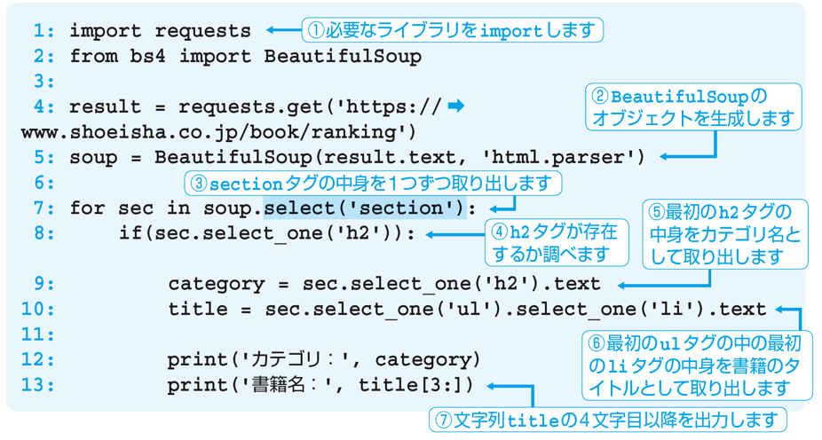
import requests
from bs4 import BeautifulSoup
result = requests.get('https://www.shoeisha.co.jp/book/ranking')
soup = BeautifulSoup(result.text, 'html.parser')
for sec in soup.select('section'):
if sec.select_one('h2'):
category = sec.select_one('h2').text
title = sec.select_one('ul').select_one('li').text
print('カテゴリ：', category)
print('書籍名：', title[3:])
8.38. Webスクレイピング (実行結果)¶
実行結果 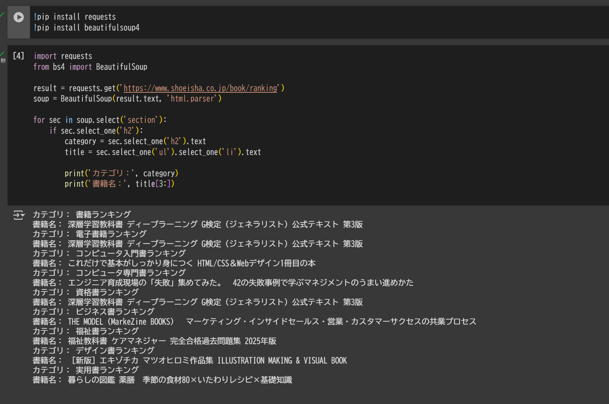
8.39. 練習問題¶
8.40. 問題 1¶
次のコードは、リストに含まれる文字列を1つだけ出力します。どの文字列を出力するかは、ユーザーが入力する値をインデックスに使用して決めます。入力した値が0、1、2のいずれかの場合には正しく動作しますが、そうでない場合にはエラーが発生してしまいます。
l = ['リンゴ', 'バナナ', 'オレンジ']
a = input('好きな整数を入力してください:')
print(l[int(a)])
try～except 構文を使用して、次のような例外処理を追加してください。
入力した値が数字でない場合（ValueErrorが発生します）に「数字が入力されませんでした」と出力する
数字であってもインデックスの範囲を超えている場合（IndexErrorが発生します）には、「範囲外の値が入力されました」と出力する
8.41. 問題 1（解答）¶
l = ['リンゴ', 'バナナ', 'オレンジ']
a = input('好きな整数を入力してください:')
print(l[int(a)])
入力した値が数字でない場合に「数字が入力されませんでした」と出力する
数字であってもインデックスの範囲を超えている場合には、「範囲外の値が入力されました」と出力する
l = ['リンゴ', 'バナナ', 'オレンジ']
a = input('好きな整数を入力してください:')
try:
print(l[int(a)])
except ValueError:
print('数字が入力されませんでした')
except IndexError:
print('範囲外の値が入力されました')
8.42. 問題 2¶
次の文章の空欄に入れるべき語句を答えてください。
* 人が読んで理解することができる文字の集まりで記述されたファイルをテキストファイルといい、テキストファイルでないものを [ ] という
* テキストファイルのうち、データをカンマ区切りで記述する形式を[ ]とよぶ。
* open関数の引数modeには、ファイルを読み込み用に開くときに[ ] を、書き込み用に開くときに [ ] を、追記用に開くときに [ ] を指定する。
8.43. 問題 2（解答）¶
次の文章の空欄に入れるべき語句を答えてください。
* 人が読んで理解することができる文字の集まりで記述されたファイルをテキストファイルといい、テキストファイルでないものを [ バイナリファイル ] という
* テキストファイルのうち、データをカンマ区切りで記述する形式を[ CSV形式 ]とよぶ。
* open関数の引数modeには、ファイルを読み込み用に開くときに[ r ] を、書き込み用に開くときに [ w ] を、追記用に開くときに [ a ] を指定する。
8.44. 問題 3¶
次の文章の空欄に入れるべき語句を、選択肢から選んでください。
* Pythonに最初から備わっていない外部ライブラリは、[ ]コマンドでインストールする必要がある。
* [ ]ライブラリには、グラフ描画用の各種機能が含まれ、[ ]ライブラリは、画像処理用の各種機能が含まれる。
* インターネット上のWebページから、欲しい情報を取り出すことを [ ] という。
* 一般的にWebページは、ページの構造と文書を [ ] を用いて記述した [ ]ファイルと、ページのデザインを記述した [ ]ファイル、および画像ファイルなどから構成される。
【選択肢】
・CSS ・HTML ・OpenCV ・pip ・matplotlib ・Webスクレイピング ・タグ
8.45. 問題 3（解答）¶
次の文章の空欄に入れるべき語句を、選択肢から選んでください。
* Pythonに最初から備わっていない外部ライブラリは、[ pip ]コマンドでインストールする必要がある。
* [ matplotlib ]ライブラリには、グラフ描画用の各種機能が含まれ、[ OpenCV ]ライブラリは、画像処理用の各種機能が含まれる。
* インターネット上のWebページから、欲しい情報を取り出すことを [ Webスクレイピング ] という。
*一般的にWebページは、ページの構造と文書を [ タグ ] を用いて記述した [ HTML ] ファイルと、ページのデザインを記述した [ CSS ] ファイル、および画像ファイルなどから構成される。
【選択肢】
・CSS ・HTML ・OpenCV ・pip ・matplotlib ・Webスクレイピング ・タグ